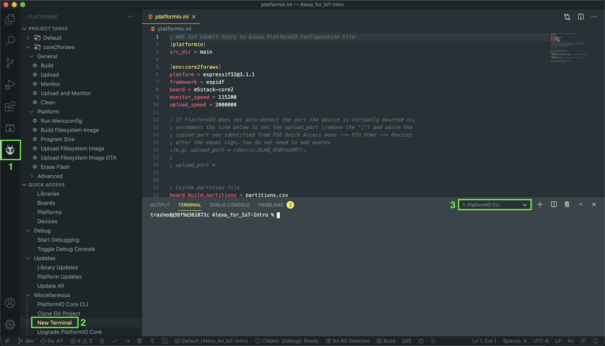

To complete this workshop you will need to use a Windows, Linux or Mac workstation which is configured with the toolchain you will need to deploy code to your Edukit device.
To set up your workstation visit AWS IoT EduKit Workshop and follow the instructions for your OS.
In this section, you’ll download and install the AWS CLI for your host machine’s operating system, retrieve AWS Identity and Access Management (IAM) user access credentials to manage services with the AWS CLI, configure the AWS CLI, and finally test that the AWS CLI is working properly. This tutorial assumes that you have an AWS account and you have completed setting up your environment. If you already have the AWS CLI (version 1 or version 2) installed and configured on your machine, skip to the test section.
In the Getting Started tutorial, you installed and used PIO and the PIO terminal window. It is important to continue to use the PIO terminal window for all subsequent steps. The PIO terminal window pre-loads additional applications and libraries that your standard terminal/command prompt might not have.
If you’ve closed VS Code or don’t have the terminal viewport with the PlatformIO CLI loaded in VS Code, follow the steps below after opening VS Code:

1 - Open PIO menu, 2 - Open new PIO Terminal, 3 - Verify you’re in the ‘PlatformIO CLI’ terminal session
The AWS Command Line Interface (CLI) is a unified tool to manage your AWS services. With just one tool to download and configure, you can control multiple AWS services from the command line and automate them through scripts. To be able to configure the AWS CLI, you’ll first need to have an AWS account. Please sign in to AWS console or create an AWS account before proceeding.
IAM is a web service that helps you securely control access to AWS resources. We recommend you create an administrative user first instead of using your root user account.
To retrieve your IAM user’s access credentials, follow the official docs.
With the AWS CLI installed and the IAM user access credentials in hand, it’s time to configure the AWS CLI. One of the settings you’ll configure is the AWS region. It’s important to keep in mind that the region you’re currently using stays consistent—for purposes of this tutorial, we are standardizing on us-west-2. Using a different region or unknowingly changing regions can cause other challenges in subsequent steps, such as regional service availability.
To configure the AWS CLI on your host machine, enter the following command in the terminal viewport:
aws configure
The CLI will prompt you to input four parameters. The fields should be filled out similar to below, with the corresponding access key Id and secret access key that was retrieved earlier for your IAM user:
AWS Access Key ID [None]: EXAMPLEKEYIDEXAMPLE
AWS Secret Access Key [None]: EXAMPLEtnFEMI/K7MDENG/bPxRfiCYEXAMPLEKEY
Default region name [None]: YOUR_REGION_HERE
Default output format [None]: json
With everything configured as described above, it is now time to test your AWS CLI to ensure it is working properly. First, you will verify the CLI is installed, and then validate the configuration.
To check the CLI is installed correctly, we will use the version option. A successful installation will output the AWS CLI version (if you receive errors, visit the troubleshooting guide):
aws --version
Next, you will verify the AWS CLI is configured with your IAM credentials and US West (Oregon) region. The command you will run will check your MQTT broker endpoint for AWS IoT. It should return an address with the pattern xxxxxxxx-ats.iot.us-west-2.amazonaws.com. If you receive errors, visit the troubleshooting guide.
aws iot describe-endpoint --endpoint-type iot:Data-ATS